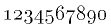

medi*o —
Angle: user environment; execution environment, run-time environment
France: environnement d'utilisateur; environnement d'exécution
Germane: Anwender-Betriebskonfiguration, Benutzeroberfläche;
Programmablaufbedingungen
Ruse: операционная
среда, среда исполнения
1998-08-15
Variablo kies valoro estas parto de la operaciuma medio kaj kiun uzas interpretilo de ŝelo; ekz-e la serĉvojon en multaj sistemoj indikas la medivariablo PATH.
Angle: environment variable
Ruse: переменная среды, переменная
командного процессора
1998-03-06
«Pref. uzata antaŭ unuoj kaj signifanta: miliono (1000000); simb.: M» [PIV1]. En komputado oni ofte uzas la plej proksiman potencon de 2: 220 = 1048576; ekz-e megabajto (Mbajt). Vd obloprefikso.
1996-02-29
Mezurunuo de memorkapacito, 1024 kilobajtoj, 220 = 1048576 bajtoj; mallonge «Mbajt» (Mibajt).
Angle: megabyte
Ruse: мегабайт
1996-02-29
Vd mem ☺.
Rimedo ebliganta referenci la kurantan kuntekston; ekz-e en Unikso la dosiernomo . (punkto) indikas la kurantan dosierujon; tial la komando
Simile en la redaktilo ed punkto indikas la kurantan linion ktp (en iuj sistemoj ankaŭ aliaj signoj estas uzataj por memreferenco, ekz-e steleto por la kuranta adreso en asemlaj lingvo). Kp supermem.
Angle: dot,
self-reference
Ruse: сам
2000-08-27
 Kvadrata matrico egala al sia adjunkta: M[i,j] = konjug(M[j,i]).
Sekve, la ĉefdiagonalo konsistas el
reeloj. Se ĉiuj elemnetoj estas reelaj, temas pri simetria matrico.
Kvadrata matrico egala al sia adjunkta: M[i,j] = konjug(M[j,i]).
Sekve, la ĉefdiagonalo konsistas el
reeloj. Se ĉiuj elemnetoj estas reelaj, temas pri simetria matrico.
Sumo de memadjunktaj matricoj estas memadjunkta matrico; produto de memadjunktaj matricoj estas memadjunkta se ili komutas.
Ĉiuj ajgenoj de memadjunkta matrico estas reelaj. Por ajna memadjunkta matrico M ekzistas tia unita matrico U ke U⁻¹MU estas reela diagonala matrico.
Angle: self-ajoint matrix, Hermitian matrix
Ruse:
самосопряжённая матрица
1998-08-31
Reĝimo de operaciplenumo, ĉe kiu operando (plej ofte, adresreĝistro aŭ komandonombrilo) aŭtomate (t.e. kromefike) krementiĝas per adicio. Vd antaŭkremento, memdekremento, postkremento.
Angle: autoincrement
1996-02-29
Aparteno, la baza rilato inter aro kaj ties elemento, simbole x∈a («ikso membras en a, ikso anas en a, ikso apartenas al a»); en Paskalo x EN a. Kp subaro.
Angle: membership relation
Ruse: отношение принадлежности
1996-02-29
∏ En la objektemaj programlingvoj: komponantoj de klaso, ĝiaj metodoj, variabloj ktp.
Angle: class member
2002-11-04
Reĝimo de operaciplenumo, ĉe kiu operando (plej ofte, adresreĝistro) aŭtomate (t.e. kromefike) krementiĝas per subtraho. Vd antaŭkremento, memalkremento, postkremento.
Angle: autodecrement
1996-02-29
Maltaŭtologio, logika
propozicio malvera ĉe ajnaj valoroj de siaj
liberaj variabloj, ekz-e
a&¬a. Kp taŭtologio.
Angle: contradiction
Ruse: противоречие
1996-02-29
En operaciumo aŭ granda programo, ĉia agado en kiu la memoro estas traktata estkiel risurco, ekz-e memorgenerado, malokupo, protekto ktp; la funkciojn de memoradministrado realigas memoradministrilo.
Angle: storage management
Germane: (Frei)&Speicherverwaltung
Ruse:
управление памятью
1996-02-29
Parto de operaciumo, modulo(j) kiu(j) responsas pri memorhavigo (vd memorgenerilo), priservas implicajn (vd makulaturtraktado) kaj malimplicajn (vd malokupi, detrui) memorrezignojn, protektas memorpecojn kontraŭ senrajta atingo el fremdaj taskoj, ebligas al la programisto verki programojn por virtuala memoro pli granda ol la fakte disponebla fizika memoro ktp.
Angle: storage management system, storage manager
Ruse:
система управления памятью
1996-02-29
Anticipe rezervita iom granda parto de la ĉefmemoro, en kiu la memoradministrilo generas novajn objektojn. Kp dinamika memorareo.
Angle:
storage area
France: région de la mémoire
Germane: Speicherbereich
Ruse: область
памяти
1996-02-29
Vd memoro.
Angle: memory cycle
Ruse:
цикл памяти
1996-02-29
Ĉelo.
Angle: cell, location, word
Ruse: ячейка
1996-02-29
La agoj de memoradministrilo por disponigi al programo (tasko, procezo) pecon da ĉefmemoro. En Paskalo memorgenerado okazas kaj implice — ĉe ĉiu voko kreiĝas novaj ekzempleroj de la objektoj de la vokata proceduro aŭ funkcio — kaj malimplice, per memorgenerilo.
Angle: memory allocation
France: allocation de la mémoire
Germane: Speicherzuordnung, Speicherplatzzuweisung
Ruse: отведение памяти
1996-02-29
En programlingvo aŭ en memoradministrilo, rimedo per kiu programo povas havigi al si memorpecon de bezonata amplekso el iu (eventuale defaŭlta) memorareo. En Paskalo memorgenerilo havas la formon de voko al la praproceduro kreu, ekz-e en la regiono de la deklaro
La sennomaj variabloj atingeblas per referencoj. Por malkrei sennoman variablon oni povas ĝin detrui.
Kp malkonstruilo.
Angle: allocator,
generator
Ruse: генератор памяти, оператор
отведения памяти
1996-06-03
Cirkvito, kies eligaĵo dependas ne nur je la kuranta stato de ĝia enigaĵo, sed ankaŭ je finia nombro da ĝiaj antaŭaj statoj. Kp senmemora cirkvito.
Angle: sequential circuit
1996-02-29
La plej gravaj karakterizaĵoj, determinantaj la rendimenton de memoro, estas la memorkapacito kaj la atingotempo. Bedaŭrinde, oni ne povas optimigi ambaŭ parametrojn: grandkapacitaj memoroj, ekz-e magnetaj diskoj, estas relative malrapidaj, dum la rapidaj memoroj kutime estas pli multekostaj kaj malpli ampleksaj (ekz-e kaŝmemoro). Tiun problemon oni solvas aranĝante hierarkion de memoroj ĉirkaŭ la ĉefprocesoro, tiel ke ju pli proksimas memoro al la procesoro, des pli ĝi estas rapida, kaj ju pli memoro malproksimas disde la procesoro, des pli ĝi estas grandkapacita.
+---------------+
/| magneta disko |
+-----------+ +-----------+ +-----------+/ +---------------+
| procesoro |---| kaŝmemoro |----| ĉefmemoro | triaranga
+-----------+ +-----------+ +-----------+\ +---------------+
unuaranga duaranga \| magnetrubando |
+---------------+
Angle: memory hierarchy
Ruse: иерархия
памяти
1996-02-29
Kapacito de memororgano, kutime esprimata en kilobajtoj, megabajtoj aŭ gigabajtoj.
Angle: memory size
Germane: Speicherkapazität
Ruse: объём
памяти
1996-02-29
Angle: memory map, storage map
Ruse: карта
памяти
2000-09-13
Organo de komputilo destinita por ricevo, konservado kaj resendo de datumoj. Vd ĉefmemoro, ekstera memoro, energi-dependa memoro, energi-nedependa memoro, memorkapacito, memorhierarkio, memorprotekto, virtuala memoro.
Angle: memory, storage
France: mémoire
Germane: Speicher
Ruse: память,
запоминающее устройство, ЗУ
1996-02-29
Kontrolo, ĉe memoratingo, ĉu la koncerna ĉelo apartenas al la adresspaco de la tasko.
Angle: memory protection
France: protection de la mémoire
Germane: Speicherschutz
Ruse: защита
памяти
1996-02-29
La uzo de signo por indiki «sin mem», la signantaĵon. Ekz-e en la frazo Homo estas vorto dusilaba, la unua vorto indikas ne vivulon sed lingvaĵon. Oni kutimas kursivigi la memsignadajn aperojn de nomoj aŭ encitiligi ilin. Tiun lastan manieron ni uzas en la sintaksaj difinoj (la konsekvencan markadon de memsignado, kaj ĝuste per unuopaj citiloj, unue enkondukis Frege).
Angle: autonymy
Ruse:
автонимность
1996-02-29
 Elemento de menuo, kiun
la uzanto povas elekti per musklako aŭ klavofrapo (se tiu elemento sencas
por la kuranta reĝimo; vd paligi).
Elemento de menuo, kiun
la uzanto povas elekti per musklako aŭ klavofrapo (se tiu elemento sencas
por la kuranta reĝimo; vd paligi).
Angle: menu item
Ruse:
строка меню
2000-10-07
En dialogo, listo da komandoj aŭ opcioj aperanta sur la ekrano, el kiu listo la uzulo elektas la bezonaton klavante numeron aŭ literon aŭ almovante la kursoron per sagoklavoj aŭ muso (vd treni, klaki). Vd ŝprucmenuo, falmenuo, tirmenuo.
Angle: menu
France: menu
Germane: Menü
Ruse: меню
1996-02-29
En dialogo, linio aŭ vico de menutitoloj (kapvortoj aŭ piktogramoj), kutime situanta supre aŭ malsupre sur la ekrano aŭ fenestro kaj servanta por aktivigi menuojn (falmenuojn aŭ tirmenuojn).
Angle: menu bar
France: barre de menu
Germane: Menübalcken
Ruse: линейка меню
1996-02-29
 Datumaro, kolekto da mesaĝoj (afiŝoj aŭ retleteroj), sendebla kiel unu mesaĝo aŭ
konservebla en unu dosiero. La plej ofte uzatan
formon difinas RFC 1153.
Datumaro, kolekto da mesaĝoj (afiŝoj aŭ retleteroj), sendebla kiel unu mesaĝo aŭ
konservebla en unu dosiero. La plej ofte uzatan
formon difinas RFC 1153.
Angle: digest
2000-02-26
Angle: message
France: message
Germane: Nachricht, Mitteilung, Meldung
Ruse:
сообщение; запрос, метод
1996-02-29
Kvazaŭprefikso kiu, metite antaŭ indiko de
formala sistemo (lingvo, kalkulo) karakterizas ĝin estkiel priskribantan
alian formalan sistemon; vd metalingvo, metateorio.
Noto. «meta-. Vortero en substancnomoj…» [PIV1].
1996-02-29
Frazo en metalingvo, kia ekz-e metaesprimo de la sintaksa metalingvo, difinita sub sintakso.
Angle: meta-expression
Ruse: мета-выражение
1996-02-29
En la sintaksa metalingvo, difinita sub sintakso, ajna el sintaksaj unuoj kies kroĉo formas alternativon.
Angle: meta-factor
1996-02-29
En Emakso kaj sur iuj klavaroj, reĝima klavo uzata por formi komandojn (ekz-e en Sparc, la META-klavo estas markita per rombo). Samtempe premante META-klavon kaj alian klavon (ekz-e c) la uzulo enigas signon de META-registrumo, simbole M-c. (En Emakso M-c estas komando por transformi la sekvan vorton en la formon nomusklan.)
En la Vindozaj realigoj de Emakso tiun rolon havas la Alternativa registrumo (dum Sparc havas ambaŭ tiujn registrumojn).
Por klavaroj malhavantaj META-klavon Emakso ebligas uzi eskapklavon (prefikse; M-c sinonimas kun ESC c).
Angle: META key
1999-02-04
Formala lingvo uzata por priskribo de (alia) formala lingvo; en tia situacio la priskribata lingvo estas nomata la objekta lingvo; ekz-e la formo de Backus—Naur en ĝia apliko por sintaksa difino de ALGOL-60.
Angle: metalanguage
France: métalangage
Germane: Metasprache
Ruse: метаязык
1996-02-29
Metateorio pri matematiko, studanta ties fundamenton, strukturon kaj la metodojn. La precipa studobjekto de metamatematiko estas la matematikaj pruvoj, tial iuj preferas nomi ĝin «pruvteorio». Ekzempla nocio el metamatematiko estas dualeco.
Angle: metamathematics
Ruse: метаматематика
1996-02-29
Teorio (t.e. kalkulo) pri formala teorio aŭ kalkulo.
Angle: metatheory
Ruse: метатеория
1996-02-29
En pluraj objektemaj programlingvoj, (adreso de) proceduro kiu (adreso) estas kampo de klaso.
Angle: method
Ruse:
метод
1997-07-25
Metodo por elekti koneksan memorpecon por priservi memormendon. Estas disponigata la plej strikta (mallonga) elemento el la listo da la liberaj memorblokoj, kies longo ne malplias la menditan. Kp metodo de unua taŭgaĵo.
Angle: best fit algorithm
France: méthode de tenure meilleure
Ruse: метод
наилучшего приближения
1996-02-29
Metodo por elekti koneksan memorpecon por priservi memormendon. Estas disponigata la unua trovita elemento el la listo da liberaj memorblokoj, kies longo ne malplias la menditan. Kp metodo de pleja konveno.
Angle: first fit algorithm
France: méthode de premier tenu
Ruse: метод
первого подходящего
1996-02-29
Angle: central dot
1996-02-29
Karakterizo de la situo de opo; la mezumon de a₁, a₂, …, an oni signas per ā. Laŭ PIV1,
mez·nombr·o, mez·o·nombr*oMenciindas aritmetika mezumo, geometria mezumo, harmon(i)a mezumo, kvadrata mezumo, logaritma mezumo, potenca mezumo, pesita mezumo; vd ekspekto.
Noto. La vortojn mezumo kaj mezumi (determini mezumon, angle to average, ruse усреднять) donas [Leb88]; tia verbo vere estas bezonata, kaj se ĝi estos akceptita, el ĝi facile deriveblos la substantivoj mezumo (=mezumitaĵo, mezonombro) kaj mezumado (angle averaging, germane Mittelbildung). — Ni rezervas «averaĝa»n por la signifoj neformalaj aŭ ne tute ĝustaj («averaĝa homo», «averaĝa kompliko»), lasante al «mezumo» la rigoran sencon matematikan.
Angle: mean
Ruse: среднее
1996-02-29
En interaga sistemo, rekta linio kun mezurstreketoj aŭ orta kruco el tiaj linioj, ŝovebla sur la ekrano aŭ fikspozicia, kiu servas por fari surekranan mezuradon dum faksimila redaktado, ekz-e por preciza permana aranĝo de tabeloj, alineoj ktp.
Angle: ruler
France: règle
1996-02-29
Da mega-glitpunktaj-operacioj sekunde (de la angla mega floating point operations per second); MGlOp/s.
1996-02-29
Piktogramo esprimanta emocion, humoron, precipe ridmieno kaj vemieno; ofte ankaŭ iliaj Askiaj imitaĵoj :-) kaj :-( (por vidi la vizaĝesprimojn klinu vian kapon maldekstren; kp komposta grafiko). Oni ofte uzas mienvinjetojn en retpoŝto kaj forumaro; en PIV1 la mienvinjeto simbolas teatron. Vd ankaŭ grimac(vinjet)o, palpebrumo.
Angle: emoticon
France: mimique, binette
Ruse: рожица
1996-02-29
Enkonstruita aŭ persona komputilo farita el mikroprocesoro, al kiu estas aldonitaj periferiaĵoj kaj programaro necesaj por kompleta datumprilaboro.
Angle: microcomputer
Ruse: микрокомпьютер
1996-02-29
Icego kapabla plenumi la funkciojn de ĉeforgano.
Angle: microprocessor
Ruse: микропроцессор
1996-02-29
Angle: microprogramming
Ruse:
микропрограммирование
1996-02-29
Sekvenco da mikrokomandoj (operacioj super la internaj reĝistroj de koncerna procesoro). Kp firmvaro, ladaĵo.
Angle: microprogram, firmware
Ruse:
микропрограмма, прошивка
1996-02-29
 Entenanta majusklon post minusklo ene de
vorto, ekz-e dosierNomo; iam (sed ne plu) karaktera formo de la
hipertekstaj ligiloj en vikio.
Entenanta majusklon post minusklo ene de
vorto, ekz-e dosierNomo; iam (sed ne plu) karaktera formo de la
hipertekstaj ligiloj en vikio.
Angle: CamelCaps, mixed case
Ruse: смешанный регистр
2004-10-26
Reviziita (1992) normo por retpoŝto en la Interreto, ebliganta
Tiu metodo ne estas speciale Esperanta, ĝi estas internacia. Ekz-e, ankaŭ la germana frazo Ja gewiß doch quält zuviel Syntax mürbe Köpfe, kun tiel indikita signaro estos sendata kiel
El ĉiuj disponeblaj askiigoj la MIME-skribo estas la plej esprimiva. Nur ĝi ebligas sendifekte askiigi la tutan tekston de ĉi artikolo, ekz-e la frazon: «Ĉu ĉ, ^c, cx aŭ =E6?» (tiel: =C6u =E6, ^c, cx a=FD =3DE6?). Kompreneble, tiu normo ne bezonas sankcion de la Esperanta, aŭ de la franca, aŭ de iu ajn lingva akademio.
Pri uzeblo de MIME en Emaksaj pakaĵoj vd http://bmrc.berkeley.edu/~trey/emacs/mime.html.
1996-02-29
Mallongigo de la vorto minimumo, uzata
en matematikaj formuloj kiel operacisimbolo. Kp maks, mu-operatoro.
1996-02-29
Signobildo de Eŭropa cifero el la aro de malsame
altaj/profundaj ciferoj. Ekz-e tiaj:

Ĉar pli legebla, tia cifertiparo speciale konvenas por presado de grandaj ciferaj datumaroj, ekz-e por la matematikaj tabeloj. Ciferoj, konfuzeblaj en la majuskla tiparo (ekz-e 3 kaj 8), klare distingeblas en la formo minuskla. La minusklaj ciferoj aperis en Eŭropo dum Renesanco. Kp majusklo, majuskla cifero.
Angle: old-style
digit, non-lining figure, hanging figure
Germane: Minuskelziffer
1996-02-29
La ago transformi ĉefliterojn en etliterojn, precipe tutvorte, kiel faras la Emaksa
komando M-l: KomAndO→komando. Kp nomuskla, majuskligo.
Angle: lowercasing,
downshifting
Ruse: опустить в нижний регистр
2000-08-27
«Malĉefa, malgranda litero» [PIV1]; ankaŭ etlitero (kp ĉeflitero); pri minuskla signaro vd
ĉe majusklo; ankaŭ vd uskleco.
Angle: small letter; minuscule
Germane: kleiner Buchstabe; Minuskel
France: minuscule
Pole: mała litera; minuskuła
Ruse: малая
буква, строчная буква; минускул
1996-02-29
Duloka operacisimbolo de subtraho; unuloka
operacisimbolo de signumŝanĝo; la
negativa signumo-signo; ekz-e resp.
a−b; −a; −1.
Angle: minus
Ruse: минус
1996-02-29
Ω Ĉesigo de plenumado de programo, tasko, procezo sekve de eraro malkovrita de la operaciumo.
Angle: abnormal
termination, ABEND
Ruse: авост, аварийное
завершение
1996-02-29
Neĝusta funkciado; kp paneo. Speciale, stato de operaciumo aŭ de komputila reto, en kiu ĝi ne plu kapablas ĝuste funkcii sekve de aparata paneo aŭ de tro granda laborŝarĝo.
Angle: fault, failure, malfunction
France: defaillance, faute, défaillance, panne
Ruse:
ошибка, отказ, неисправность
1996-02-29
Malbona kondiĉkvalito, t.e. tiu eco de matrico (aŭ de ekvacio), ke negranda eraro en kalkulo aŭ perturbo
en la matricanoj relative forte efikas la kompudadon. Matrico estas des pli
miskondiĉa, ju pli granda estas ĝia kondiĉnombro.
Ekz-e la matrico
1.0 1.0 1.0 1.0001
estas miskondiĉa, kaj eĉ malgranda perturbo je 10−4 en la dekstra parto de uzanta ĝin ekvacio draste ŝanĝas la solvon:
x + y = 2.0 x + 1.0001*y = 2.0001
(la solvo: x=y=1);
x + y = 2.0 x + 1.0001*y = 2.0002
(la solvo: x=0, y=2).
Angle: ill-conditioned
Ruse: плохо
обусловленная
1998-08-14
Referenco al memoro kie malestas objekto de la datumtipo, implicata de la referenco (ekz-e al malokupita memoro).
Angle: dangling
reference, bad pointer
France: référence folle
Ruse: висячая
ссылка, дикая ссылка
1999-05-23
Erara signalo en cirkvito, ekz-e sekve de misfunkcio de la energifonto.
Angle: glitch
Ruse: ложный сигнал
1996-02-29
Simbolo kies formo helpas homan memoron. Ekz-e, en simbola maŝinkodo la simbolo SUB ofte estas uzata por indiki komandon «subtrahu».
Noto. «mnemonik·o [Z] — arto helpi kaj plibonigi la memorkapablon» [PIV1].
Angle: mnemonic symbol
Ruse: мнемонический символ
1996-02-29
Operacisimbolo en Paskalo k.a. programlingvoj; vd resto, modulo.
1996-02-29
Angle: model(l)ing, model-building
Ruse:
моделирование
1996-02-29
Interpretaĵo, la aro de valoroj atribuataj al la elementoj de formala
sistemo (teorio, formala lingvo ktp).
Angle: model
Ruse: модель
(2) model*o —
Ŝablono por serĉo, generado ktp.
Angle: format, pattern
Ruse: образец
1996-02-29
Aparato transformanta ciferecan signalon en analogan aŭ inverse por transmeto per analoga lineo, ekz-e per telefono.
Noto. Vd la noton ĉe modulo. Cetere, «Iuj malŝatas tiun vorton, kaj proponas “modulilon”, ktp. “Modemo” estas sufiĉe internacia hodiaŭ por tiuj kiuj uzas komputilojn, kaj ties uzo malaperos baldaŭ pro la transiro al neanalogaj telefonretoj. Tial mi opinias ke ni rajtas uzi tiun vorton ĝis kiam ĝi malaperos pro neuzo» [Jel].
Angle: modem (MOdulator-DEModulator)
Ruse: модем
1996-02-29
Ŝanĝi staton aŭ valoron de variablo, dosiero aŭ alia prigrama objekto; revalorizi.
Kp ĝisdatigi.
Angle: update
Ruse: изменить
1999-05-23
 modjul·o [SPIV, Pfei] —
modjul·o [SPIV, Pfei] — 1996-02-29
Programada lingvo kreita de N. Wirth kiel adaptaĵo de Pascal al la postuloj de sistemprogramado, kun speciala atento al modula strukturo (Pli ĝenerala stokastogenerilo), kvazaŭparalelado (ekz-e La dormema frizisto), traktado de interrompoj; tio ebligas oportune programi operaciumojn kaj stiradon de periferiaĵoj.
Forumoj: news:comp.lang.modula2, news:comp.lang.modula3. Vd http://www.ee.newcastle.edu.au/users/staff/peter/m2/Modula2.html.
Rim. Estas pluraj varioj de MODULA; en nia Leksikono, se alio ne estas indikita, ĉiam temas pri MODULA-2.
1996-02-29
Aranĝo de programo en formo de aro da moduloj kun rigora specifo de iliaj interagoj; ĉiu modulo entenas priskribon de sia interfaco kaj realigan sekcion. La plej simpla speco de modulo estas proceduro; en la modernaj programlingvoj estas ankaŭ pli evoluintaj formoj de moduloj: pakaĵoj kaj taskoj en Ada — ekz-e vd realigon de abstrakta datumtipo (racionoj), plurtaskan problemon (La 5 filozofoj), modulojn de MODULA (ĉe La dormema frizisto, Pli ĝenerala stokastogenerilo).
Vd enkapsuligo, kaŝado.
Angle: modular programming
Ruse: модульное программирование
1996-02-29
«a
kongruas al b laŭ modulo m» signifas, ke a−b
estas oblo de m. En multaj programlingvoj (ekz-e Paskalo, Ada) la ŝlosilvorto MOD simbolas dulokan operacion liverantan la reston de entjera dividooperacio.
Angle: modulo
Ruse: модуль
(2) modul·o —
Relative aŭtonoma parto de programo; vd modulema programado.
Noto. Oni proponis ankaŭ la formon modjulo [SPIV] por eviti konfuzon kun la homonimoj mod-ul-o, modulo, moduli (modulacii). Malmultaj ĝin akceptis. Pli bona distingado povus esti jena:
Angle: module
Ruse:
модуль
1996-02-29
Angle: mode
Germane: Modus
2000-12-18
Datumoj konservataj en komputilo en redaktebla formo, do estas adapteblaj al novaj postuloj aŭ cirkonstancoj. Kp firmaĵo, efemeraĵo.
Angle: soft copy
Ruse: мягкая копия
2000-05-05
mol·disk·o — Noto. Pri la «rigidaj» 9-centimetraj disketoj vd sub disko.
Angle: floppy disk
Ruse: дискета, гибкий
диск
1996-02-29
Angle: monitor
Ruse: монитор
1996-02-29
Duongrupo posedanta neŭtran elementon. Ekzemplojn vd sub kroĉo.
Angle: monoid
Ruse:
моноид
1996-02-29
Vd referenco.
Angle: pointer
Ruse: указатель
1996-02-29
Baza koncepto en la matematika teorio
pri kategorioj. Por la plej gravaj tipoj de morfioj oni uzas tiun
vorteron por fari terminon el koncerna greka vortero (procedo regula kvankam
ekster-Esperanta): aŭtomorfio, izomorfio, homomorfio.
Noto. La formo -morfio unue aperis (kiel parto de homeomorfio) en [1]. Pli detale vd [COK91].
Lit. 1. M. Fréchet. Ĉu la spaco de la kurboj estas Banach-a spaco? // Journal des mathématiques purs et appliquées. 1961. N-ro 40. P. 197–204.
Angle: morphism
Ruse: морфизм
1996-02-29
mort·a klav·o — Vd senpaŝa klavo.
Angle: dead key,
accent key
Ruse: мёртвая клавиша
1996-02-29
Forkopii [Pfei], t.e. sendi datumon el unu parto de komputila memoro (el la fonto) al alia (la celo), malokupante la fonton. Kp kopii, permuto, valorizo.
Angle: move
France: déplacer
Ruse: переместить
1996-02-29
En dialoga redaktilo, movi (forkopii) apartigitan areon («eltondaĵon») de teksto aŭ bildo en la redaktilan poŝon forviŝante la areon el la originalo, por poste elpoŝigi la kopiitan pecon aliloke.
Kp transpoŝigi, enpoŝigi, kopii en la poŝon.
Angle:
cut
Ruse: забрать в карман
1996-02-29
Operaciumo por familio de personaj komputiloj, realigitaj surbaze de mikroprocesoroj kongruaj kun Intel 8086.
1996-02-29
Nomo de la 12a el la literoj grekaj (M, µ). La etlitero estas simbolo por «mikro-» («milionono») kaj speciale por «mikrometro»:
1 µ = 1 µm = 10⁻⁶ m = 0.001 mm
En teoria komputoscienco µ estas la simbolo de mu-operatoro.
Angle: mu
Germane: My
Ruse: мю
1996-02-29
Maniero administri kanalon ebliganta dispartigi ĝin en subkanalojn; ĉiu el la subkanaloj estas konektita al datumfonto, kiuj fontoj sendas datumojn samtempe kaj sendepende unu je la aliaj. La uzon de multipleksorado motivas kostoŝparo. La ĉefaj metodoj estas du:
Angle: multiplexing
Ruse: мультиплексирование
1996-02-29
Aparato realiganta multipleksoradon.
Angle:
multiplexer
Ruse: мультиплексор
1996-02-29
Grupo kies operacion oni nomas multipliko
(kaj signas per «·»); la neŭtran
elementon, unuo; kaj la neŭtrigan elementon, inverso. Kp
adicia grupo.
Angle:
multiplicative group
Ruse: мультипликативная
группа
1996-02-29
En programlingvoj, operacisimbolo havanta tiun saman prioritaton, kiel la operacisimbolo de la multipliko. Paskale (vd esprimo):
multiplikeska_simbolo = "*" | "/" | "DIV" | "MOD" | "KAJ".
Angle: multiplying operator
Ruse: операция
типа умножения
1996-02-29
En preskaŭ ĉiuj programlingvoj tiu operacio estas signata per steleto, ĝiaj argumentoj estas nomataj faktoroj kaj ĝia rezulto, produto. La formulon a∗b oni voĉlegu «a multiplikita per bo», aŭ «a-oble bo».
Vd ankaŭ matrica multipliko, skalara produto.
Angle:
multiplication
Ruse: умножение
1996-02-29
Rezulto de la ago munti, muntita programo plenumebla (ekz-e «ĉu vi uzis la ĉi-noktan muntaĵon», nightly build).
Angle: build
Ruse: построение
2000-11-12
Uzi programan ilon por aŭtomate (re)traduki kaj bindi plurdosieran programon atentante interdependon de la moduloj kaj ilian redaktodaton. Ekz-e la utilaĵo make en Unikso, kiu uzas la dependospecifojn el muntodosiero. Tamen vd difina modulo.
Angle: build, make
Ruse: собрать
1998-03-17
Priskribo de programa projekto uzata por munti ties aktualan version. Ĝi entenas valorizojn kaj regulojn de la formo
celo: argumentoj
komandoj t.e. se iu el la dosieroj indikitaj inter la argumentoj ŝanĝiĝis pli malfrue ol la dosiero celo (aŭ se la celo ne ekzistas), tiam necesas plenumi la komandojn, kiuj (normale) muntos la celon el al argumentoj.
Angle: makefile
1998-03-06
Estu P(…,x,…) predikato kies variabloj varias super ℕ. Per
µx[P(…,x,…)] estas signata la malpleja a tia, ke
P(…,a,…) veras (se tia nombro ekzistas). Per mu-operatoro eblas
difini novajn komputeblajn funkciojn
(vd barita serĉo, senbara serĉo). Ekz-e la funkcio
x ↦ µy(|2y−x| = 0)
liveras x/2 por la paraj x-oj kaj diverĝas por la neparaj. Mu-operatoro estas uzata por difini la «ĝenerale» rekursiajn funkciojn (alivorte, la «mu-rekursiajn funkciojn»).
Angle: mu-operator
Ruse:
мю-оператор, операция минимизации
1996-02-29
Elemento de grafika uzulinterfaco, marko indikanta la kurantan pozicion de muso sur la ekrano. La grafika formo de muskursoro povas varii laŭ la kuranta reĝimo de la fenestro.
Angle: mouse pointer, mark
1999-03-20
Negranda plasta mato sternata sub muson por ke ĝi ne misglitu dum la trenado.
Angle: mouse pad
France: tapis à souris
Ruse: коврик для
мышки
1996-02-29
Dialoga disponaĵo kiun la uzanto movas (fakĵargone: trenas) sur horizontala ebeno (ekz-e sur sia tablo, prefere kovrita per musmato), tiel movante muskursoron sur la ekrano de terminalo. La elekto de la montrata pozicio kaj de la responda opcio indikita per piktogramo estas farata per premo («klako») sur klavon provizitan sur la muso. Kp stirglobo.
Rim. Unue publike prezentita de Douglas Engelbart antaŭ 30 jaroj, je 1968-12-09.
Angle: mouse
Ruse:
мышь
1998-12-09
Manipuli muson, precipe transpoŝigi.
2002-12-18